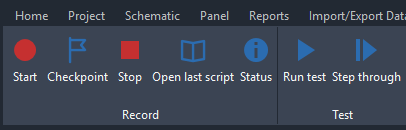
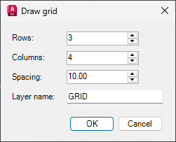
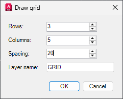
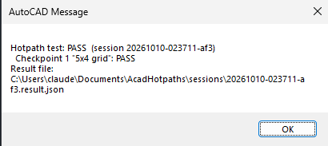

Hotpaths for AutoCAD
Test your AutoCAD tools once. Rerun the test with one click.
Do the test by hand while Hotpaths records it. You get a step-by-step test script with screenshots and every dialog value you changed. Click Run test later and Hotpaths does it all again, then tells you PASS or FAIL.
- Real output, not a mockupEvery picture on this page came from a Hotpaths recording.
- Tested on AutoCAD Electrical 2026Built for AutoCAD 2026 on Windows.
- Stays on your PCNo account and no cloud. Recordings and scripts are plain files you own.
- Word, Excel and MarkdownGive testers the format they already use.
Who it's for
- CAD managers who check custom commands, ribbons and dialogs after every update.
- Developers of AutoCAD plugins who need a regression test without writing test code.
- Teams that hand manual test scripts to testers, and are tired of rewriting them.
Demo: a real test, start to finish
This test draws a line, then opens a Draw grid dialog, changes two values and picks a point. Here is what Hotpaths did with it.
-
Record: click Start and do your test
Hotpaths adds a ribbon tab. Click Start, do the work as usual, add a Checkpoint for anything worth checking, then click Stop.

-
Hotpaths sees what you changed in each dialog
It takes a picture of the dialog as it opened and again before you pressed OK, and writes down only the values you changed.

Before 
After In the script this becomes:
A dialog opens: Draw grid. Make these changes, then confirm:- Set Columns to
5(was4) - Set Spacing to
20(was10.00)
- Set Columns to
-
You get a test script anyone can follow
When you click Stop, Hotpaths writes Test steps: numbered steps, the ribbon button or command for each, every point picked, and a screenshot of each step. Optionally also as Word and Excel files, with a PASS/FAIL column for testers.
-
Run it again with one click
Click Run test and pick the test. Hotpaths opens a new drawing, clicks the same ribbon buttons, types the same commands and points, fills each dialog with the recorded values and presses OK. At the end it checks every checkpoint and shows the verdict.

The verdict from a run of a similar grid test with one checkpoint. Every run is saved with its date and verdict.
By hand vs. with Hotpaths
| Writing test scripts by hand | Hotpaths | |
|---|---|---|
| Writing the script | Type every step, take and paste every screenshot | Written for you when you click Stop |
| Dialog values | Easy to forget one | Every changed value, with before and after pictures |
| Retesting after a change | Someone clicks through it all again | One click, with a PASS or FAIL verdict |
| Formats | Whatever you had time for | Markdown, Word and Excel from the same recording |
| History | None | Every run saved with its date and verdict |
Hotpaths for AutoCAD
One-time payment, per user.
- The Hotpaths plugin for AutoCAD 2026 (Windows), installed as a normal AutoCAD app bundle
- Record, replay with automatic dialog filling, and step-through mode
- Test scripts in Markdown, plus Word and Excel export
- A test browser in AutoCAD: open any test's script, screenshots and results, or run it
- Email support from the developer
The button opens an email to support@gladmill.com. Send it and we reply with payment details and the download. Not sure it fits your setup? Ask first.
Questions
Which AutoCAD versions does it work with?
AutoCAD 2026 on Windows. It is tested on AutoCAD Electrical 2026. Other AutoCAD 2026 products load the same plugin; if you use one, tell us before you buy and we'll confirm.
Does it work with our own commands, ribbons and dialogs?
Yes, that's what it is for. It records ribbon clicks, typed commands, prompts and points from any command. Reading and filling dialog values is tested on standard Windows and WinForms dialogs; WPF dialogs are read through UI Automation. If a dialog can't be filled, the replay waits and tells you which values to enter.
Does anything leave my PC?
No. Hotpaths needs no account or internet connection. Recordings, screenshots, scripts and results are files in your Documents folder.
Can testers without Hotpaths use the scripts?
Yes. The test script is a normal Markdown, Word or Excel file with the screenshots. Anyone can follow it by hand.
How do I pay?
Click the buy button and send the email. We reply with payment details and the download link.